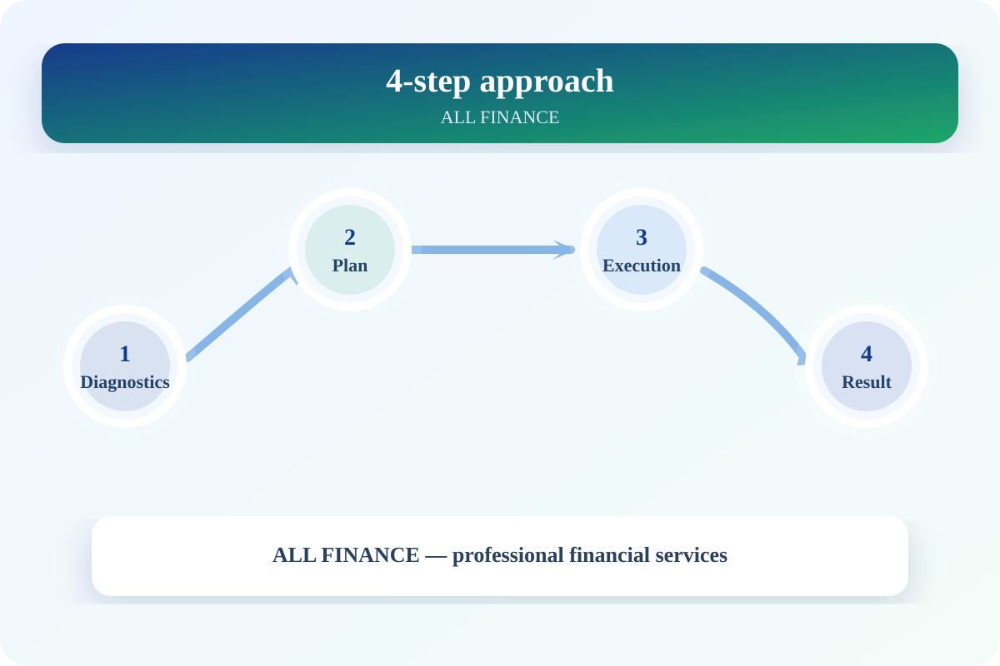
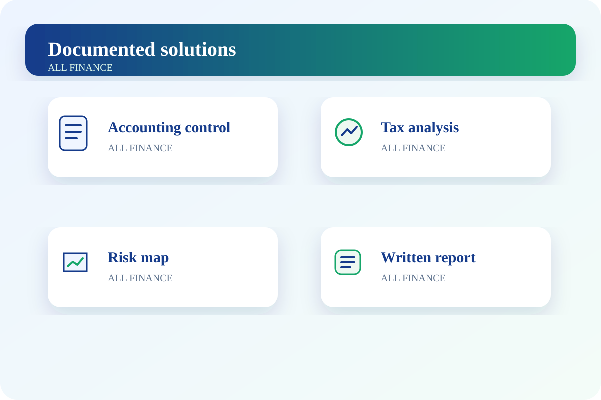
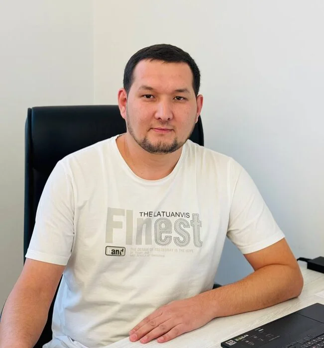

Accounting outsourcing
Complete management of primary documents, bank and cash transactions, payroll, counterparty accounting and statutory reporting.
Learn more →Accounting, tax, audit, HR and 1C services delivered with clear deadlines, documented processes and accountable specialists.
Each service area is managed by an accountable specialist in line with accounting, tax and labor requirements and concludes with a documented result.
Complete management of primary documents, bank and cash transactions, payroll, counterparty accounting and statutory reporting.
Learn more →Practical guidance on tax regimes, VAT, corporate income tax, turnover tax, incentives and transaction tax consequences.
Learn more →Document preparation, discrepancy analysis and support for the company’s position during desk reviews, field inspections and tax audits.
Learn more →Restoring missing, incorrect or incomplete accounting periods from documents and bringing reports into order.
Learn more →Managing employment contracts, orders, leave, staffing documents and employee records in line with labor law.
Learn more →Independent review of accounting, assets, expenses, contracts and internal controls, with recommendations for reducing risks.
Learn more →Clear management reports on revenue, expenses, cash flow, debt and profitability.
Learn more →Configuring and reviewing the 1C database, implementing imports and integrations, and automating accounting processes.
Learn more →Every project follows four principles: diagnosis, planning, implementation and a documented outcome.

Documents, accounting status and potential risks are reviewed.
We define the scope, deadlines and responsible persons.
Agreed tasks are completed step by step.
Management receives the report, register and recommendations.
A professional workflow for accounting restoration, audit preparation, internal audit and management reporting.

Pricing is confirmed in the final commercial proposal based on the volume of documents and transactions.
Meet our team of accounting, finance, marketing and sales specialists.


Leave your details. The request will be sent automatically to our Telegram bot.